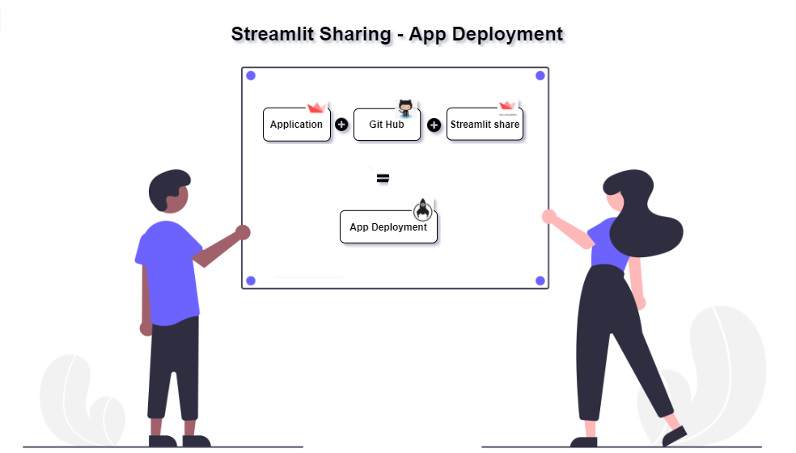

üëãWelcome to Streamlit Book
This book contains the details of the python package called streamlit and its concepts, Visit streamlit for more details.
Introduction
- What is streamlit?
- How to install?
Concepts
- Title, input, text input, image, video, sidebar, markdown, latex ..etc
References
Introduction
Streamlit is a python library that makes easy to create and share the web applications with out html, css and javascript.
1. Pre-requisites
- Python Version > 3.6
2. Installation
-
Standaloneüé∑
- pip install streamlit
- streamlit hello
-
Anacondaüêç
- conda create --name streamlit (create new environment)
- conda activate streamlit (activate)
- pip install streamlit
- streamlit hello
- conda deactivate (to deactivate )
-
Venv ✅(Built in python no need to do pip install)
- python -m venv streamlit (create new environment)
- cd pathtostreamlit\Scripts\activate.bat (activate)
- pip install streamlit
- streamlit hello
- cd pathtostreamlit\Scripts\deactivate.bat (deactivate)
-
Virtualenvüëã
- pip install virtualenv
- virtual streamlit (create new environment)
- cd pathtostreamlit\Scripts\activate.bat (activate)
- pip install streamlit
- streamlit hello
- cd pathtostreamlit\Scripts\deactivate.bat (deactivate)
-
PipenvüîÜ
- pip install pipenv
- pipenv install streamlit
- pipenv shell or pipenv run (activate)
- streamlit hello
- exit (deactivate)
3. Uninstallation
- pip uninstall streamlit
4. Commands
-
Basic Commands✅
- streamlit --help
- streamlit hello
- streamlit config show
- streamlit cache clear
- streamlit docs
- streamlit --version
-
Run Commandüëã
- streamlit run scriptname.py
- streamlit run 'url.py' (Github or Gist)
- Gist Example - streamlit run https://gist.github.com/SurendraRedd/feaa6f29961501fa9fce7a45abc14651/raw/Example.py
- GitHub Example - streamlit run https://github.com/SurendraRedd/StreamlitProjects/blob/master/Example.py
- streamlit run app.py --server.port 8503 (to run in different port)
 Concepts
Concepts
ConceptsImport
import streamlit as st
Display
-
Text/Title
import streamlit as st st.title("Welcome to streamlit") st.text('Happy Learning!') -
Header/Subheader
import streamlit as st st.header('Header') st.subheader('Subheader') -
Markdown
import streamlit as st # Basic markdown st.markdown('Header') # Advanced html_temp = """ <div style="background-color:tomato;padding:10px"> <h2 style="color:white;text-align:center;">Markdown html Example </h2> </div> """ st.markdown(html_temp,unsafe_allow_html=True) st.markdown('<i class="material-icons">{}</i>'.format("people"), unsafe_allow_html=True) # Load stylesheet with open(style.css) as f: st.markdown('<style>{}</style>'.format(f.read()), unsafe_allow_html=True) -
Latex
import streamlit as st st.latex(r''' e^{i\pi} + 1 = 0 ''') st.latex(r''' ... a + ar + a r^2 + a r^3 + \cdots + a r^{n-1} = ... \sum_{k=0}^{n-1} ar^k = ... a \left(\frac{1-r^{n}}{1-r}\right) ... ''') -
Write
import streamlit as st st.write('Example text') st.write(['st', 'is <', 3]) st.write("✔️ Time up!") -
Code
import streamlit as st st.code('s="Happy Learning!" for i in range(0,10): print(s)') st.echo() with st.echo(): text = 's="Happy Learning!" for i in range(0,10): print(s)' st.write(text) -
Help
import streamlit as st st.help(range)
Data
import streamlit as st
import pandas as pd
import numpy as np
df1 = pd.DataFrame(
np.random.randn(50, 5),
columns=('col %d' % i for i in range(5)))
my_table = st.table(df1)
st.write('Dataframe example')
st.dataframe(df1)
data = {'1':"True",'2':"True",'3':"False"}
st.json(data)
Media
import streamlit as st
from PIL import Image
import urllib.request
# Basic image
st.image('./image.png')
img = Image.open("download.jfif") #open the image stored in specified location
#Opens the image from the url
img = Image.open(urllib.request.urlopen("https://mms.businesswire.com/media/20200616005364/en/798639/22/Streamlit_Logo_%281%29.jpg"))
st.image(img, width=300, caption="Simple Image")
# Video playing
vid_file = open("videofile.mp4","rb").read() #play the video stored in specified location
st.video(vid_file)
#Audio
audio_file = open('myaudio.ogg', 'rb')
audio_bytes = audio_file.read()
st.audio(audio_bytes, format='audio/ogg')
Charts
import streamlit as st
import numpy as np
import matplotlib.pyplot as plt
st.line_chart({"data": [1, 5, 2, 6, 2, 1]})
st.area_chart({"data": [1, 5, 2, 6, 2, 1]})
st.bar_chart({"data": [1, 5, 2, 6, 2, 1]})
arr = np.random.normal(1, 1, size=100)
fig, ax = plt.subplots()
ax.hist(arr, bins=20)
st.pyplot(fig)
st.altair_chart(data)
st.vega_lite_chart(data)
st.plotly_chart(data)
st.bokeh_chart(data)
st.pydeck_chart(data)
st.deck_gl_chart(data)
st.graphviz_chart(data)
st.map(data)
Widgets
import streamlit as st
st.button('Click')
st.checkbox('Check the checkbox')
st.radio('Radio Button',[1,2,3])
st.selectbox('Select', [1,2,3])
st.multiselect('Multiselect', [1,2,3])
st.slider('slide',min_value=0, max_value=10)
st.text_input('Enter Username')
st.number_input('Enter a Number')
st.text_area('Enter Text Here!')
st.date_input('Date Input')
st.time_input('Time entry')
st.file_uploader('File Uploader')
st.beta_color_picker('Select color')
Sidebar
import streamlit as st
st.sidebar.<widget>
<widget> : button, checkbox, radio, selectbox, multiselect, slider, text_input, number_input, text_area, date_input, time_input
Control Flow
import streamlit as st
st.stop()
Progress Bar
import streamlit as st
import time
# Sample Progress bar
my_bar = st.progress(0)
for percent_complete in range(100):
time.sleep(0.1)
my_bar.progress(percent_complete + 1)
with st.spinner('Wait for it...'):
time.sleep(5)
st.write('Done!')
Status Messages & Others
import streamlit as st
st.error('Error Message')
st.warning('Warning Message')
st.info('Info Message')
st.success('Success Message')
st.exception("IndexError('list out of index')")
st.balloons()
st.empty()
place_holder = st.empty()
place_holder.text('Replaced!)
st.get_option(key)
st.set_option(key)
st.beta_set_page_config(layout='wide')
Cache or Optimize
import streamlit as st
@st.cache
func()
Magic Command
import streamlit as st
'''
# Markdown magic
This is some _**text**_.
'''
df = pd.DataFrame({'col1': [40,54,67]})
df # <-- df values
x = 100
'x', x # <-- 'x' and its value
Apps Deployment
-
Using StreamlitShare

Prerequisites
-
Requirements.txt file - Github account - Access to share.streamlit.io
-
-
Using Heroku

References
 Streamlit Sample codes
Streamlit Sample codes
Streamlit Sample codesCodes
-
Example- Usage of Slider, SelectBox & Miltiselect
import streamlit as st import numpy as np x = st.slider('Select a value') st.write(x, 'squared value is', x * x) Exp = streamlit.selectbox("Choose your Experience: ", np.arange(1, 40, 1)) lan = st.multiselect("Which is your favorite language?", ["Python", "JavaScript", "Java", "C", "Julia"]) -
Example- Usage of dataframe
import pandas as pd import streamlit as st @st.cache def load_data(): df = pd.read_csv("data.csv") # csv #df = pd.read_excel("data.excel") #excel return df # Will only run once if already cached df = load_data() -
Example- Jupyter Notebook
# Run jupyter notebook in streamlit using 3 steps below - jupyter nbconvert --to script scriptname.ipynb - awk '!/ipython/' scriptname.py > [temp.py](http://temp.py/) && mv [temp.py](http://temp.py/) [app.py](http://app.py/) && rm scriptname.py - streamlit run [app.py](http://app.py/) Refer the blog more details https://learnups2020.wordpress.com/2020/11/07/streamlit-code-running-from-jupyter-notebook/ -
Example- Altair Chart
# Alt Chart example import pandas as pd import numpy as np import altair as alt import streamlit as st df = pd.DataFrame(np.random.randn(100, 3), columns=['a', 'b', 'c']) c = alt.Chart(df).mark_circle().encode(x='a', y='b', size='c', color='c') st.altair_chart(c, width=-1) -
Example- Simple Calculator App using sqlite DB
# Simple Calculator import pandas as pd from pathlib import Path import sqlite3 from sqlite3 import Connection import streamlit as st URI_SQLITE_DB = "test.db" def main(): st.title("Simple Calculator") st.markdown("Select two inputs from sidebar.") conn = get_connection(URI_SQLITE_DB) init_db(conn) build_sidebar(conn) display_data(conn) run_calculator(conn) def init_db(conn: Connection): conn.execute( """CREATE TABLE IF NOT EXISTS test ( INPUT1 INT, INPUT2 INT );""" ) conn.commit() def build_sidebar(conn: Connection): st.sidebar.header("Inputs") input1 = st.sidebar.slider("value-1", 0, 100) input2 = st.sidebar.slider("value-2", 0, 100) if st.sidebar.button("Save to database"): conn.execute(f"INSERT INTO test (INPUT1, INPUT2) VALUES ({input1}, {input2})") conn.commit() def display_data(conn: Connection): if st.checkbox("Display data from the database"): st.dataframe(get_data(conn)) def run_calculator(conn: Connection): if st.button("Calculate Sum"): st.info("Sum of two inputs function is called.") df = get_data(conn) st.write(df.sum()) def get_data(conn: Connection): df = pd.read_sql("SELECT * FROM test", con=conn) return df @st.cache(hash_funcs={Connection: id}) def get_connection(path: str): """Put the connection in cache to reuse if path does not change between Streamlit reruns. NB : https://stackoverflow.com/questions/48218065/programmingerror-sqlite-objects-created-in-a-thread-can-only-be-used-in-that-sa """ return sqlite3.connect(path, check_same_thread=False) if __name__ == "__main__": main() -
Example- ProgressBar in sidebar and generate chart
import streamlit as st import time import numpy as np progress_bar = st.sidebar.progress(0) status_text = st.sidebar.empty() last_rows = np.random.randn(1, 1) chart = st.line_chart(last_rows) for i in range(1, 101): new_rows = last_rows[-1, :] + np.random.randn(5, 1).cumsum(axis=0) status_text.text("%i%% Complete" % i) chart.add_rows(new_rows) progress_bar.progress(i) last_rows = new_rows time.sleep(0.05) progress_bar.empty() st.button("Re-run") -
Example- Streamlit Components Example
import streamlit as st st.sidebar.subheader("Component 1") t1 = st.sidebar.text_input("Component 1 name") s1 = st.sidebar.slider("Component 1 value") st.sidebar.markdown("---") st.sidebar.subheader("Component 2") t2 = st.sidebar.text_input("Component 2 name") s2 = st.sidebar.slider("Component 2") st.title("Hello!") st.write(t1, s1) st.write(t2, s2) template = """ <div class="markdown-text-container stText" style="width: 698px;"> <div style="font-size: small;">This is paragraph 1 text.</div> <p>This is paragraph 2 text.</p> <p>This is paragraph 3 text.</p> </div> """ -
Example- Streamlit Code Share Example
Prerequisites - pip install streamlit-embedcode import streamlit as st from streamlit_embedcode import github_gist, gitlab_snippet, pastebin_snippet, codepen_snippet, ideone_snippet, tagmycode_snippet st.title("Github Gist Snippet") github_gist("https://gist.github.com/SurendraRedd/feaa6f29961501fa9fce7a45abc14651") st.title("Gitlab Snippet") gitlab_snippet("https://gitlab.com/snippets/2037642", height=400) st.title("Pastebin Snippet") pastebin_snippet("https://pastebin.com/Ryr8q1kq", width = 600, scrolling = False) st.title("Code Pen Snippet") codepen_snippet("https://codepen.io/surendra1985/pen/wvGREBb", width = 600, scrolling = False) st.title("Ideone Snippet") ideone_snippet("https://ideone.com/tXCake") st.title("Tagmycode Snippet") tagmycode_snippet("https://tagmycode.com/snippet/14517/streamlit-basic-concepts#.X6fD8WgzZPY")
 Data Applications
Data Applications
Data ApplicationsCodes
-
Simple CRUD Application
import streamlit as st import pandas as pd import base64 from PIL import Image import json import urllib.request # DB Management # DB Functions # Database Creation & Connection import sqlite3 from sqlite3 import Connection import streamlit as st # Security #passlib,hashlib,bcrypt,scrypt import hashlib URI_SQLITE_DB = "Users.db" html_temp = """ <body style="background-color:red;"> <div style="background-color:tomato;padding:10px"> <h2 style="color:white;text-align:center;">Simple Login Application Code</h2> </div> </body> """ st.set_page_config( page_title = 'Apps', page_icon = "✌", layout = "centered", initial_sidebar_state = "expanded" ) def make_hashes(password): return hashlib.sha256(str.encode(password)).hexdigest() def check_hashes(password,hashed_text): if make_hashes(password) == hashed_text: return hashed_text return False # """ # check_same_thread = False is added to avoid same thread issue # """ conn = sqlite3.connect(URI_SQLITE_DB, check_same_thread=False) c = conn.cursor() @st.cache(hash_funcs={Connection: id}) def get_connection(path: str): """Put the connection in cache to reuse if path does not change between Streamlit reruns. NB : https://stackoverflow.com/questions/48218065/programmingerror-sqlite-objects-created-in-a-thread-can-only-be-used-in-that-sa """ return sqlite3.connect(path, check_same_thread=False) def create_usertable(conn: Connection): c.execute('CREATE TABLE IF NOT EXISTS userstable(username TEXT PRIMARY KEY,password TEXT)') def add_userdata(conn: Connection,username,password): c.execute('INSERT INTO userstable(username,password) VALUES (?,?)',(username,password)) conn.commit() def login_user(conn: Connection,username,password): c.execute('SELECT * FROM userstable WHERE username =? AND password = ?',(username,password)) data = c.fetchall() return data def main(): """Simple Login Application""" st.markdown(html_temp, unsafe_allow_html=True) menu = ["Home","Login","SignUp","Others","About"] st.markdown( """ <style> .sidebar .sidebar-content { # background-image: linear-gradient(#264D59, #43978D, #F9E07F, #F9AD6A, #D46C4E); background-image: linear-gradient(to right top, #ebe9f3, #b7bdcc, #8094a5, #496e7c, #0c4950); color: blue; } </style> """, unsafe_allow_html=True, ) choice = st.sidebar.selectbox("Menu", menu) if choice == "Home": st.subheader("Home Page:") elif choice == "Login": st.subheader("**Please Login to the page !**") username = st.sidebar.text_input("Username","") password = st.sidebar.text_input("Password",type='password') if st.sidebar.checkbox("Login"): hashed_pswd = make_hashes(password) result = login_user(conn,username,check_hashes(password,hashed_pswd)) if result: st.success("Logged In as {0!s}".format(username)) else: st.warning("Incorrect Adhar/Passport/VoterID/Password") elif choice == "SignUp": st.subheader("Create New Account") new_user = st.text_input("Username","") new_password = st.text_input("Password",type='password') if st.button("Signup"): create_usertable(conn) add_userdata(conn,new_user,make_hashes(new_password)) st.success("Account created successfully. Please Login to application.") elif choice == "Others": st.info("Please visit to nearest adhar or passport or voterid location to get any of the ID.") elif choice == "About": st.sidebar.title("App Version details") st.sidebar.info("**App version 1.0**") if __name__ == "__main__": main() -
PencilSketcher App
import streamlit as st import numpy as np from PIL import Image import cv2 st.set_option('deprecation.showfileUploaderEncoding', False) def dodgeV2(x, y): return cv2.divide(x, 255 - y, scale=256) def pencilsketch(inp_img): img_gray = cv2.cvtColor(inp_img, cv2.COLOR_BGR2GRAY) img_invert = cv2.bitwise_not(img_gray) img_smoothing = cv2.GaussianBlur(img_invert, (21, 21),sigmaX=0, sigmaY=0) final_img = dodgeV2(img_gray, img_smoothing) return(final_img) st.title("PencilSketcher App") st.write("This Web App is to help convert your photos to realistic Pencil Sketches") file_image = st.sidebar.file_uploader("Upload your Photos", type=['jpeg','jpg','png']) if file_image is None: st.write("You haven't uploaded any image file") else: input_img = Image.open(file_image) final_sketch = pencilsketch(np.array(input_img)) st.write("**Input Photo**") st.image(input_img, use_column_width=True) st.write("**Output Pencil Sketch**") st.image(final_sketch, use_column_width=True) -
IrisPrediction App
import streamlit as st import pandas as pd from sklearn import datasets from sklearn.ensemble import RandomForestClassifier import urllib.request from PIL import Image html_temp = """ <body style="background-color:red;"> <div style="background-color:tomato;padding:10px"> <h2 style="color:white;text-align:center;"> Classifier(SL) - Iris Flower Prediction App</h2> </div> </body> """ st.beta_set_page_config( page_title = 'Iris', page_icon = "üå∫", layout = "centered", initial_sidebar_state = "expanded" ) def inputFeatures(): sepal_length = st.sidebar.slider('Sepal length', 4.3, 7.9, 5.4) sepal_width = st.sidebar.slider('Sepal width', 2.0, 4.4, 3.4) petal_length = st.sidebar.slider('Petal length', 1.0, 6.9, 1.3) petal_width = st.sidebar.slider('Petal width', 0.1, 2.5, 0.2) data = {'sepal_length': sepal_length, 'sepal_width': sepal_width, 'petal_length': petal_length, 'petal_width': petal_width} features = pd.DataFrame(data, index=[0]) return features def main(): st.markdown(html_temp, unsafe_allow_html=True) st.sidebar.info(""" ## Packages: - Streamlit, pandas & sklearn - How to install? > 1. **pip install streamlit** > 2. **pip install pandas** > 3. **pip install scikit-learn** """) st.sidebar.header('Input Features') df = inputFeatures() st.sidebar.info("#### Iris Flower species : setosa, versicolor, virginica") img = Image.open(urllib.request.urlopen("https://raw.githubusercontent.com/SurendraRedd/MachineLearningCode/master/Iris_Species.png")) # Opens the image from the url st.sidebar.image(img, width=300, caption="") st.sidebar.info("#### Features : setosa, versicolor, virginica") img = Image.open(urllib.request.urlopen("https://raw.githubusercontent.com/SurendraRedd/MachineLearningCode/master/features.png")) # Opens the image from the url st.sidebar.image(img, width=400, caption="") st.subheader('Input Features') st.write(df) iris = datasets.load_iris() X = iris.data Y = iris.target clf = RandomForestClassifier() clf.fit(X, Y) prediction = clf.predict(df) prediction_proba = clf.predict_proba(df) st.subheader('labels & index number') st.write(iris.target_names) st.subheader('Prediction') st.write(iris.target_names[prediction]) #st.write(prediction) st.subheader('Prediction Probability') st.write(prediction_proba) if __name__ == '__main__': main()
 References
References
References HappyLearning!
HappyLearning!
HappyLearning!Contributors
Feedback and suggestions are accepted.